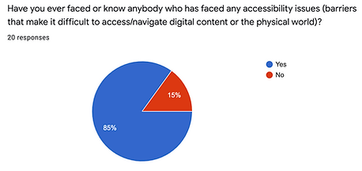
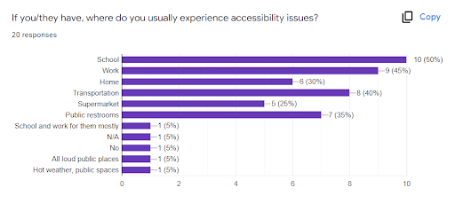

EasyAccess
A startup dedicated to making accessible businesses easier to discover

Duration
9 weeks
Apr - Jun 2022
Role
UI/UX Designer
Team
Katherine Lim, Erica Kuen, Bomed Pham, Sharon Hu
💭 "How might we help physically disabled individuals find accessible places more efficiently and reliably?"
Background
According to the World Health Organization, an estimated 1.3 billion people - about 16% of the global population - currently experience significant disability, a number that is increasing as time goes on. As such, it's incredibly important to implement accessible services in both physical and digital contexts so that more people can receive equal treatment regardless of whether they have a disability or not.
However, although many countries, workplaces, and common spaces have put measures in place to assist disabled people and remove barriers they would otherwise face, accessibility is not widely supported everywhere and this lack of support remains a major obstacle to the daily lives of individuals with disabilities.
The Challenge
For UCSD's Startup Studio, our team was challenged to investigate a specific problem within the broad field of accessibility, and design an innovative service addressing it. This included coming up with a prototype as well as writing a business plan.
Our Solution
In the end, we created EasyAccess, a mobile app that allows users to explore and share up-to-date information about the accessibility features and accommodations offered by businesses.
My Role
Over the course of this project, I contributed to all stages of the process, from initial ideation to the final design. I was especially involved in conducting user interviews as well as constructing the final interactive prototype. As a UI/UX Researcher and Designer, I collaborated with my team to complete our milestones and keep our target users in mind for the entire duration of the project.
Discovery
SET Analysis
To start, our team began examining the problem space and searching for a specific issue to focus on through a broad SET (social, economic, technological) analysis. By doing so, we could gain a better overall grasp of current accessibility services/trends and look for potential areas of improvement.
| Social | Economic | Technological |
|---|---|---|
|
|
|
Based on these factors, we came up with several Product Opportunity Gaps:
- Help individuals find more accessible public spaces
- Promote awareness and resources for accessibility
- Aid local businesses with ADA compliance
- Business side: help businesses learn how to improve accommodations
- Customer side: a service that provides accurate and verifiable information about accessibility
Launching our Survey
Having narrowed down our focus a little more, we then began looking for input and insights from people facing accessibility-related issues to better understand the sorts of challenges they frequently face in real life.
We created an online survey and found that:
- 85% of participants have faced or know someone who has faced accessibility issues 
- School, work, and transportation are the top places where people experience accessibility issues 
When asked what they wished the general public knew, participants said:
- People with disabilities are people too, who can still do things (not incapable)
- Awareness of accessibility options for those that need it
Competitive Analysis
To get a better idea of what kinds of services are already provided in the field of accessibility, we conducted a competitive analysis on some notable applications within our target focus area.

From this analysis, we noticed a couple of recurring problems that could be improved:
- Lack of in-depth accessibility options
- Inability to report inaccuracies/edit reviews
Mission Statement
💡 We aim to provide people who have accessibility issues with the necessary information to live daily life more comfortably.
🔨 This page is currently under construction, stay tuned!